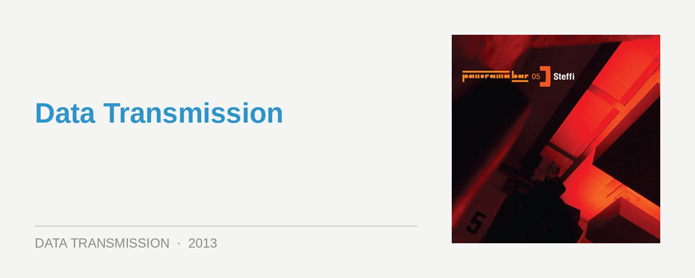

Panorama 05 – mixed by Steffi
Label: Ostgut Ton
Score: 8/10
The upstairs loft area of Berlin’s immense Berghain, the space known as the Panorama Bar, is as equally iconic for those deeper grooves as the mainfloor is for industrial-strength techno; it’s a beautiful space flanked by a wall of shuttered windows, intermittently thrown open to let the sunshine light up the room during its infamous Sunday afternoon sessions. It’s been a regular host to mainstays like Innervisions, Diynamic and beyond, as well as unexpected delights of seeing the likes Sasha, Tiga and Adam Beyer switching over to deep house mode.
Panorama Bar has a bristling, unforgettable energy all its own; like the mainroom though, it’s just as noted for its coveted residencies, as it is the heavyweight DJ guests. Following on from Ostgut Ton’s Nick Höppner mix from last year, one of Panorama Bar’s other long-running residents Steffi AKA Holland’s Steffie Doms is representing here; bringing a focus on an upfront, as well as a classic approach to mixing, via ye ol’ faithful two turntables and a mixer.
Steffi’s Panorama mix is one that’s brimming with warmth, and while she gives it a gritty, atmospheric intro courtesy of Redshape’s Palisade alias, it’s a segway into the glorious melodies of Endian’s Doze; a divine number that offers the mix a euphoric burst right off the bat. It’s akin to Steffi offering the listener a warm embrace upon arrival, rather than hitting them with too many tougher elements upfront. It’s a professional’s choice for an opening chapter that sets the groundwork, allowing her to get down to business and explore the deeper platitudes.
The percussive elements (plus a dash of Detroit) are welcomed in next, via cuts from Big Stick and Chris Mitchell, while BLM’s The Nest ushers in a new arsenal of lush melodies, which are complimented by a calculated deployment of retro 303 squiggles.
Halfway through the mix’s 16 tracks and we’re into more housey territory, with the filtered funk of John Barera & Will Martin merely a prelude before Steffi dives into the retro funk of DJ Fett Burger Disco Tre. She holds back until the mix’s final act before diving into the darker stuff, before Revino’s pure old-school house euphoria brings the mix to a beautiful close.
It was a conscious choice from Steffi to avoid an ‘old-school’ approach with her track selection across Panorama 05, with exclusive cuts making up nearly half the mix. This perhaps reflects the fact that while it’s an accomplished and authentic mix, in terms of capturing that special loft atmosphere, it doesn’t scale to reach timelessness. Nonetheless, Panorama 05 showcases the work of a professional who’s not afraid to embrace the melodic aspects while she’s crafting the deepness.